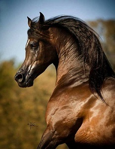

El caballo andaluz es una raza de caballo española originaria de Andalucía. Se trata de un caballo ibérico de tipo barroco que está entre las razas equinas más antiguas del mundo. En España también se le conoce comúnmente como "caballo español" y se le denomina oficialmente Pura Raza Española (PRE), porque se considera que el andaluz es el caballo español por antonomasia, a pesar de que existen muchas otras razas equinas españolas. Sin embargo en la mayoría de países recibe el nombre de "caballo andaluz". El caballo cartujano es una de las líneas de cría más importantes de esta raza.
A lo largo de la historia el caballo andaluz ha tenido un papel fundamental en la formación de razas equinas europeas y americanas, como el caballo hispano-árabe, hispano-bretón, el frisón, el Caballo Azteca, el lipizzano, el kladruber, el peruano de paso, el mustang, el Alter Real y el lusitano.
Antecedentes históricos
Desde la Antigüedad los caballos de la Bética fueron muy apreciados en el circo romano y han tenido gran fama. En la Edad Media, en la actual Andalucía había tantos caballos que Abderramán I, el año 780, otorgaba seguro y paz a los mozárabes granadinos mediante un pacto, que les obligaba a pagar anualmente 10.000 onzas de oro, 10.000 libras de plata, 10.000 cabezas de los mejores caballos. Durante el Califato de Córdoba fue muy importante la yeguada de la corte de los omeyas, así como la yeguada de Almanzor y sus jinetes bereberes. Se tiene noticia de la yeguada del khalifa Alhakén gracias a la crónica en la que Ziyad Ibn Aflah, claballerizo del khalifa y zalmedina de Medina Azahara, ensalza la calidad de los potros que anualmente se concentraban en la almunia Amiriya, procedentes del destete de las más de 3000 yeguas que tenía el califa en las marismas, junto a 500 sementales, en un claro paralelo con la posterior Saca de las Yeguas.
Utilidad
El caballo andaluz es fácil de montar, por lo que se utiliza como caballo de paseo. Se usa en las disciplinas de la doma clásica, doma vaquera y en el rejoneo. En la doma clásica destaca por su buena cabeza, excelente trote, buena reunión, piaffé y passage casi perfecto. Por el contrario, pierde mucho en alargamientos y paso.
Cría
La cría del caballo andaluz se centra en España, aunque existen buenas yeguadas por todo el mundo. El sistema de cría se basa en manadas de yeguas que viven sueltas en estado de semi libertad. Algunos potros son vendidos al destete y otros permanecen en la yeguada y empiezan a ser domados a los tres años o cuatro cuanto más adulto más preparado está para la preparación de la doma.
En las yeguadas es frecuente que los machos lleven el nombre de la madre en masculino; por ejemplo, que el hijo de Vinatera se llame Vinatero. Sin embargo, a todas las hembras nacidas en la yeguada el mismo año, se les pone un nombre que empieza por la misma letra y que pueda utilizarse en masculino para los potros que nazcan de ellas.
El caballo andaluz, desde su nacimiento muestra lo imponente que es, sus características fenotípicas lo hacen un animal firme, confiable y seguro.
Competición
Durante todo el año se realizan concursos morfológicos en que los caballos son juzgados por sexo y edad. Los ejemplares de ambos sexos participan en los concursos de manera individual, aunque las yeguas pueden participar en cobras. Además de a la morfología se da importancia a la funcionalidad. De hecho, el 25% de la nota de los machos de más de 4 años depende de una prueba de doma. Los ganadores de estos concursos quedan clasificados para la final del SICAB, que se disputa en noviembre en el Palacio de Congresos y Exposiciones de Sevilla. El SICAB es el acto más importante dentro del mundo del caballo andaluz. En él tiene lugar la final del Campeonato de España de Pura Raza Español, así como subastas, espectáculos, conferencias, etc.
¿Cómo es el caballo andaluz?
Es una raza única, con una larga esperanza de vida que va desde los 20 a los 35 años de edad. Destaca por su elegancia y belleza, pero aún tiene más. En su cabeza, de tamaño mediano, apreciamos unas orejas muy ágiles y unos ojos enormes con muchísima expresividad. La mayor parte de su cuerpo está compuesto de músculo, y verlo en plena acción mientras galopa es una verdadera maravilla. La crin de este animal, de gran espesura otorga su tan marcada majestuosidad. Su cola, larga y ligeramente ondulada, invitan a un cepillado continuo.
Inteligente y dócil
Su carácter es una de sus mayores virtudes. Gracias a su obediencia e inteligencia es muy fácil domarlo desde el principio y aunque no esté adiestrado, no cuesta excesivo trabajo tratar con él debido a su tranquilidad. Su fuerza es otro de sus puntos clave, ya que le permite soportar altas temperaturas y recuperarse bastante rápido de lesiones en las que otras razas necesitan más tiempo de reposo.
Características
Físicamente, el caballo andaluz no es uno de los equinos más corpulentos. Es más, se podría decir que su tamaño está en unas dimensiones medias. Su alzada está comprendida en un rango entre los 155 centímetros hasta los 175 centímetros.
Tiene un cuerpo muy proporcionado, con una cabeza mediana, donde lo más llamativo son los sus ojos alegres y tremendamente expresivos. El pecho es realmente amplio y musculoso, con una espalda robusta, de lomo corto y ancho. Sus piernas son largas y potentes. En definitiva, los caballos andaluces son ágiles y fuertes, a la par que elegante y bello.
Las tonalidades de sus pelajes son varias. Prácticamente, dentro de esta raza tienen cabida casi todos los colores, a excepción del pio. Sin embargo, los colores oscuros toman la delantera, siendo el color tordo el más popular.
En cuanto al carácter, puede que este sea su seña de identidad más valiosa. Son unos caballos dóciles, nobles e inteligentes, lo que les convierten en unos caballos muy fáciles de domar si se les atiende bien. Quizás este sea también el detonante de que se haya convertido en un animal tan polivalente.
Es un caballo muy utilizado para la monta y como caballo de paseo. Además, es muy popular entre las disciplinas de doma clásica, doma vaquera y otras artes tan tradicionales como el rejoneo.
De porte muy elegante, en su cabeza apreciamos unas orejas de tamaño mediano. De cuerpo corto pero musculado, la cola del caballo es de porte bajo pero ancho. Ésta es muy larga, al igual que sus crines.
El color tordo es el más popular en los caballos de pura raza española. Actualmente se admiten todos los colores de capa menos el pío, aunque antiguamente sólo se admitían tres de ellos: el negro, el tordo y el castaño.
Precio
Como siempre asignar un valor determinado a un caballo depende de muchos factores: edad, raza, sexo, etc. No obstante, se podría decir que por regla general, el valor de los caballos andaluces o de Pura Raza Española se encuentra entre los 4000 y los 6000 euros, dado que es una raza de gran importancia.

|

|

|

|

|

|

|

|